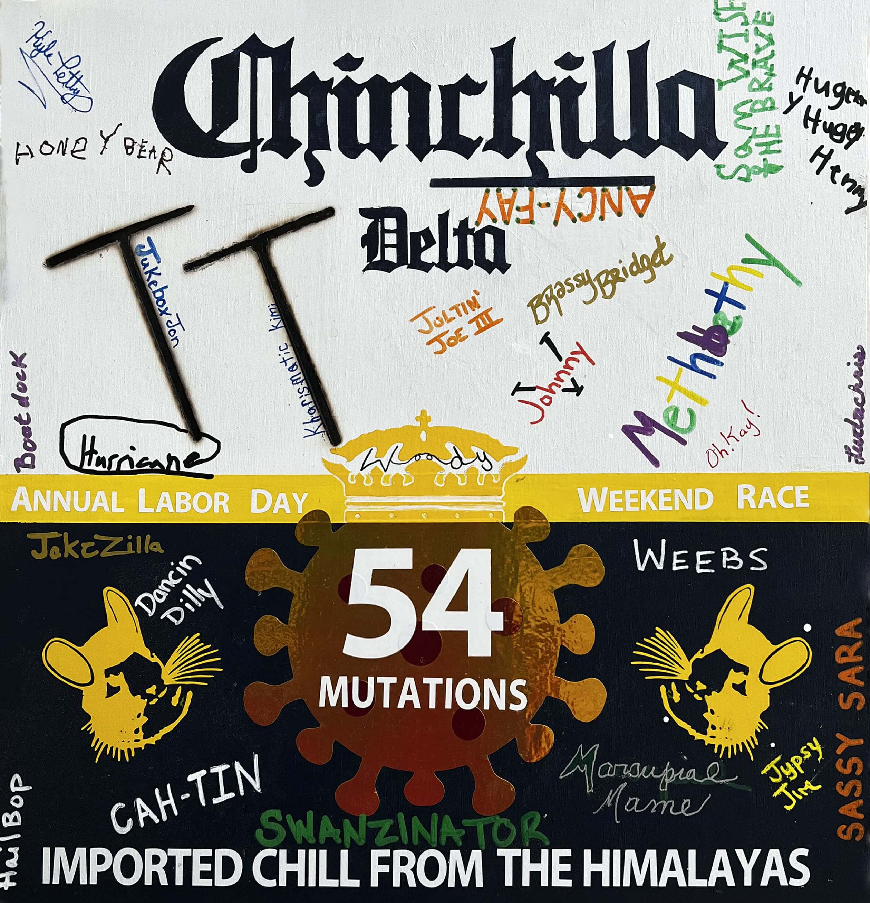
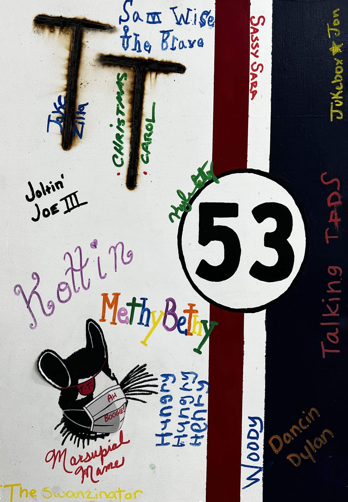
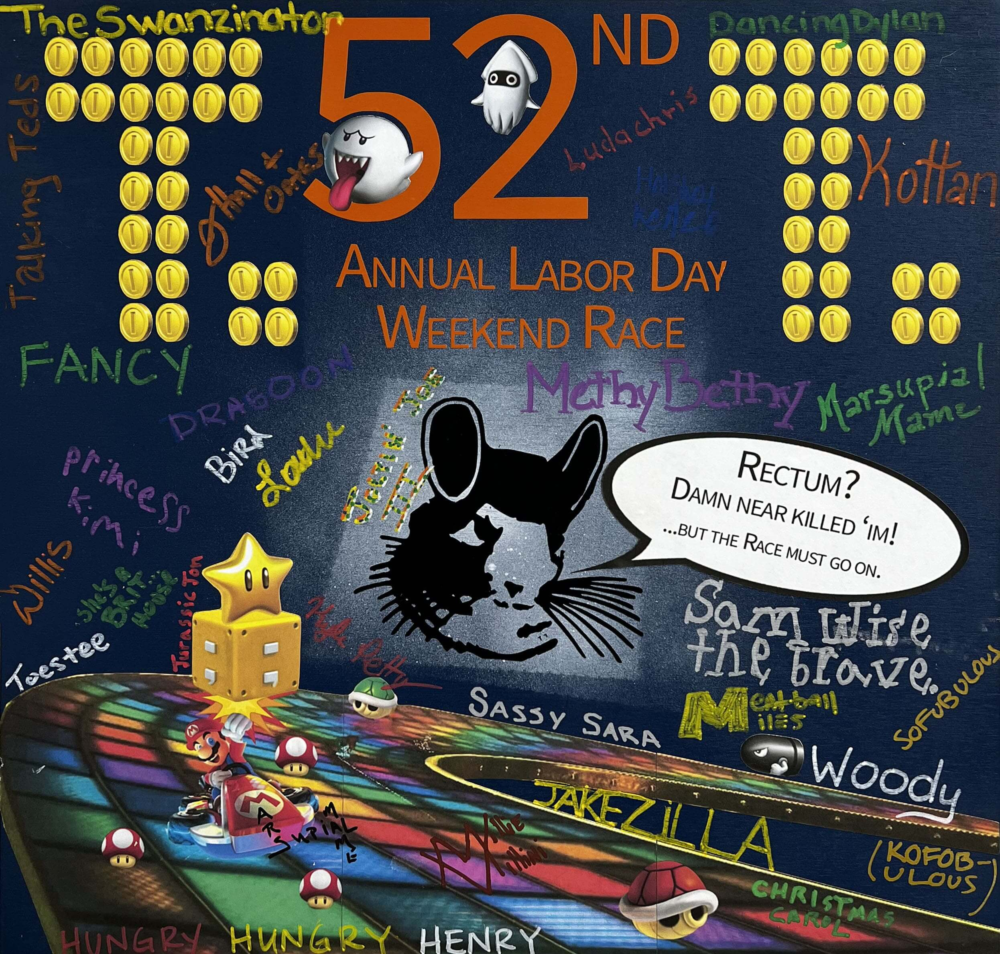
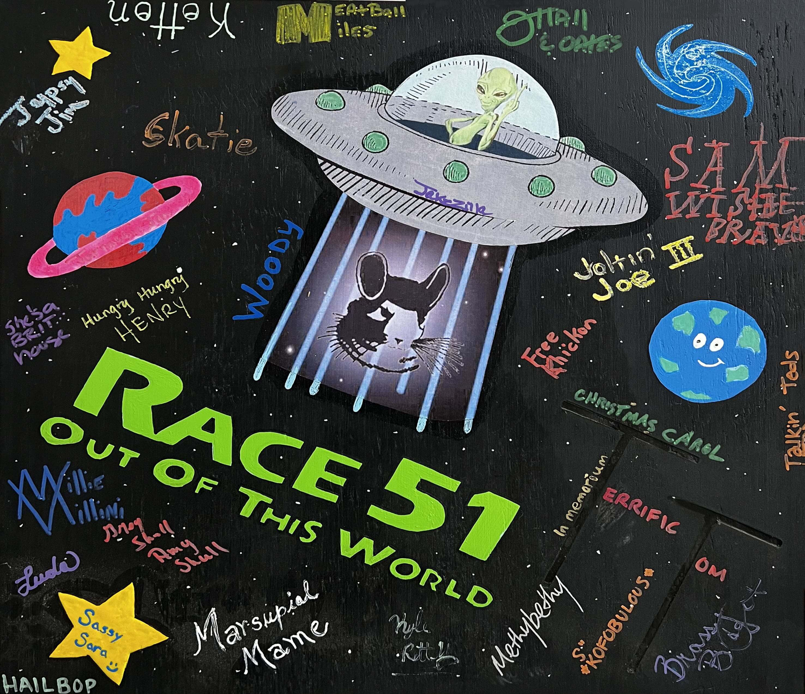
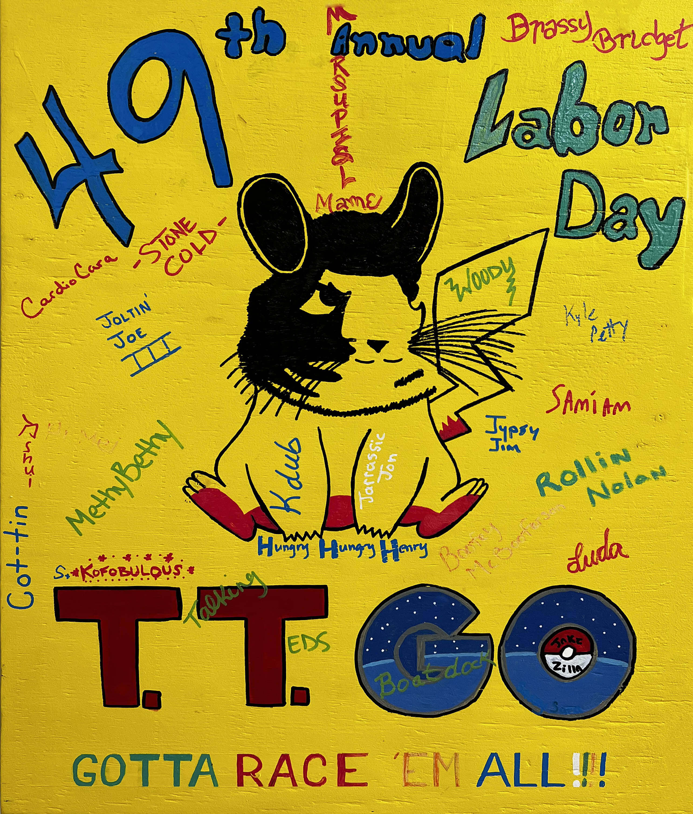
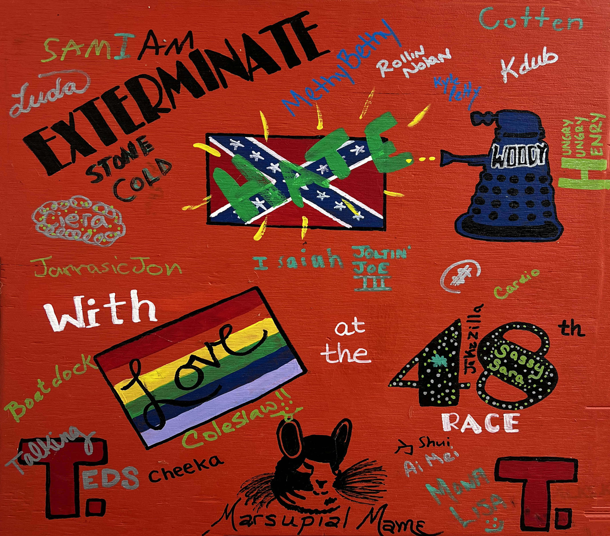
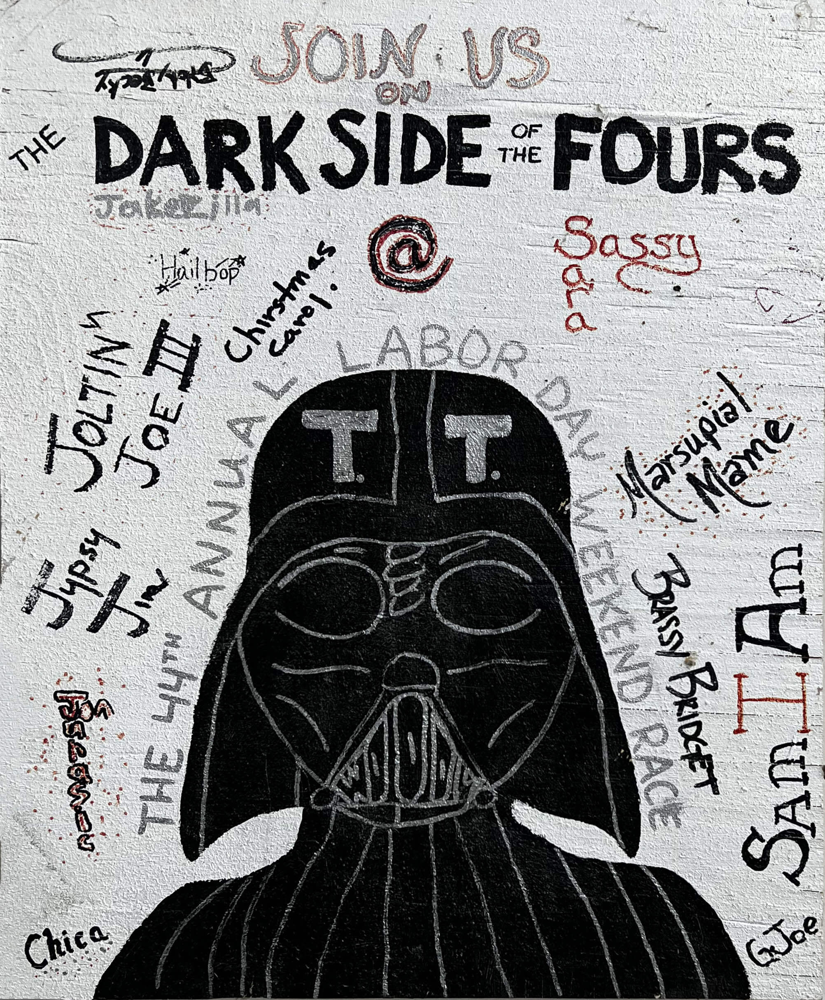

Race 55
Racer at the Gates of Dawn (A homage to the anniversary of the first Pink Floyd album).

Race 54
Delta Chinch stands by Corona-s .

Race 53
Mask up Racers!

Race 52
CALLING ALL RACERS (A homage to SamWiseTheBrave and his near-death expierence)

Race 51
Racin to Area 51!

Race 50
50 whole years of the Race!

Race 49
Racers take on the worldwide sensation of Pokémon Go, gotta catch em all!

Race 48
EXTERMINATE hate with love.
Race 47
Race Time is on Prime Time ~~ 47
Race 45
RACEING BECAUSE I'M CRAAAAZY!!!!!

Race 44
Twas the Dark Side of the 4s